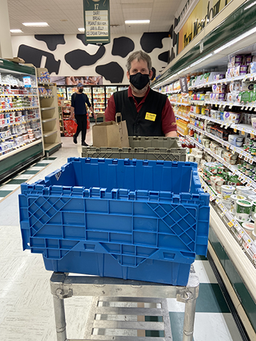
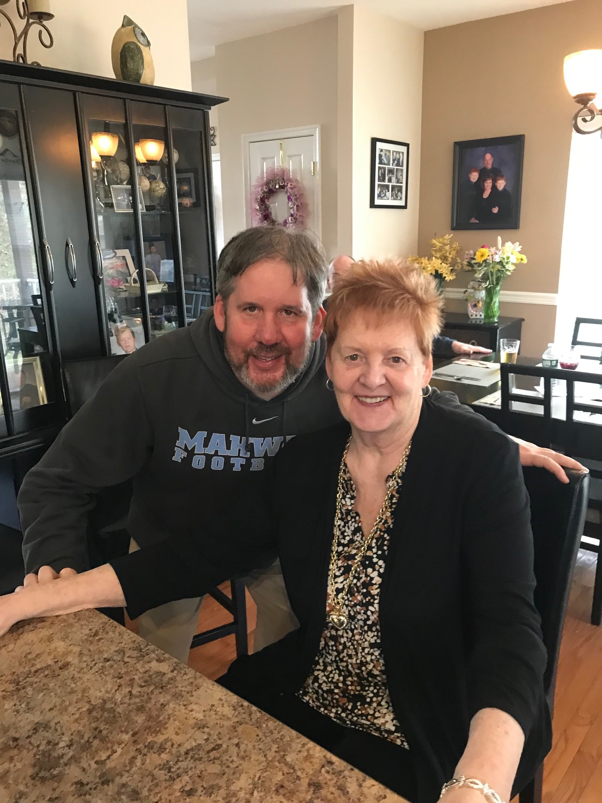

I worked full time hours at the Parsippany ShopRite (#355) as a online shopper in Northern NJ. (I went around the aisles pushing a big cart around the entire store to fill orders from customers who went on ShopRite.com, with me picking any type of grocery, meat, seafood, produce, frozen or dairy items that were picked up at a set time or later delivered to their residence during the day or night by our driver.)
↔
It was necessary work, and I was grateful for this opportunity to pay my bills then as I used that time wisely to rebrand myself to current design philosophies that will suit everyones needs in the year 2022.
↔
I did/do love the (supermarket) retail business and I will take that passion and lead it into my next wonderful opportunity into the advertising genre. From working at store level, I feel it's a major asset in the development of my growing skill sets. I know what the product looks like first hand as I handle those products and more on a daily basis at the store level at its grass roots and assist customers daily in anyway that I can.

↔
Last but not least,
A friendly FYI...
During some time in 2020, I was a caregiver for my mom who is 82 years old now. I was with her at her home in Central Florida for two months, as I took her to doctors appointments, looked after her medication and just made sure she was safe during this covid pandamic.
↔
Today, she is living full time at a retirement community in North-West New Jersey.
